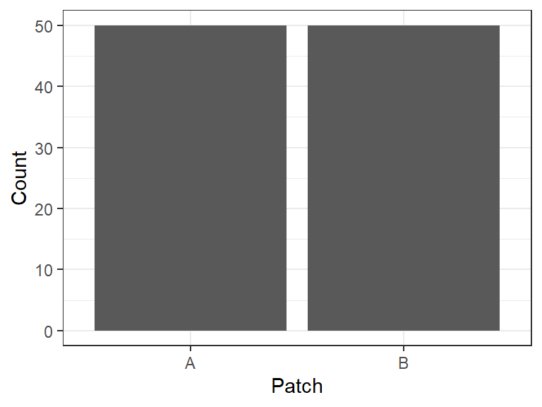
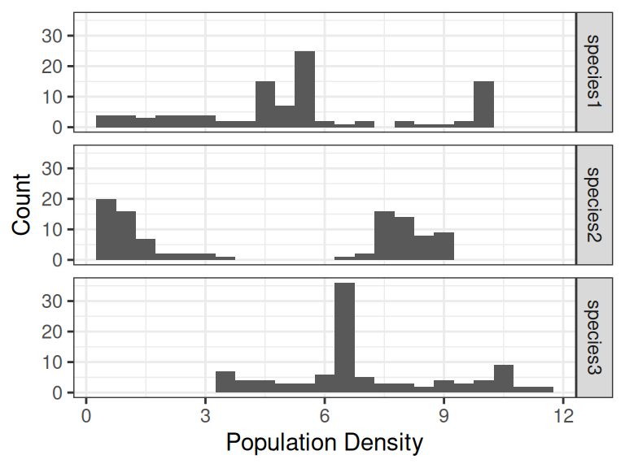

require(tidyverse)
pop <- read_csv("pop_data.csv")10 Introducing statistics
When given a data set (such as the snail data in Chapter 4) it is difficult or even impossible to look at the entire set and understand the information therein. It is therefore important to be able to describe aspects of the data, the different variables and observations through the use of statistical measurements. This has in part been covered in Chapter 6 but we will now take a more statistical approach to summarizing and describing data.
First we will start by reading the pop_data.csv file again. The data set contain population densities of three species at two spatial patches (A and B) at various points in time, ranging from 1 to 50 in steps of 1.
This data set is a sample from a larger population and while it is not clear how the units in the sample (the different time points) have been selected, we can assume that they have been randomly selected from the population of all possible units.
It would be impossible, if not very expensive, to collect data from all units in a population which means that we in practice work on samples of data. We are still interested in making conclusions about the population but these will be made from a smaller set of units that we actually can collect data from. The information we collect will be dependent on the units selected for the sample and any two samples will contain different units if the sampling procedure is done with any kind of randomization.
Properties or descriptive statistics calculated on the population are called parameters (parameter in singular) and these will have the same value because the population contains all units we are interested in. In the sample we instead calculate statistics (statistic in singular) which is an estimate of the population parameter. The value of a statistic will also be different depending on the sample drawn and this inherent randomness is a vital aspect of statistical inference which will be covered in a later chapter.
10.1 Variable types
The pop data set contains 5 variables of different types. A variable type is used to describe what type of information we can find within it and determines how we can further analyze the variable. We can separate variables into two main groups; qualitative and quantitative variables.
Qualitative variables are those describing categories, for example nationalities, gender or colors. In our pop data the variable patch is qualitative as it describes a label used for patches of land. If we would choose to label the two patches as 1 and 2, the variable itself would still be qualitative as the numbers do not have a numeric meaning.
Quantitative variables are those describing real numbers, for example the number of siblings, height, or final times in a 100 m race. The numbers represent real numeric values instead of just labels. There are two sub-types of quantitative variables; discrete and continuous. A discrete variable contain values of whole number or a limited amount of decimals. The number of siblings would be a discrete variable as you cannot have \(2.32451\) siblings and cannot measure the value with an infinite amount of decimals. Continuous variables on the other hand are able to be measured with this amount of detail, such as a person’s height that could be measured with a lot of detail.
In our data set the three species’ density variables are considered continuous quantitative variables as they represent a real numeric value and they can be measured with infinite amount of decimals. Even though the loaded data set contain values with only two decimals, this is only done for rounding purposes and does not prevent the variable itself to be measured with infinite amount of decimals.
Note
Note that we differentiate from the variable types used within programming in earlier chapters and types used to describe variables within statistics. Some terminology is similar but the biggest difference is that within programming we differentiate between various types of quantitative (numeric) variables based on the amount of information they store on the disk.
A quick conversion between the two areas would be:
character\(\rightarrow\) qualitativeFactor\(\rightarrow\) qualitativelogical\(\rightarrow\) qualitativenumeric\(\rightarrow\) quantitative (discrete or continuous)integer\(\rightarrow\) discrete quantitative
10.2 Variable scales
In addition to describing what values we can expect in a variable, we can also use a variable scale to get information how the values relate to one another. Both the type and scale of a variable are important aspects to define or learn before analyzing the variable to know which methods are suitable.
Qualitative variables can be split into two different scales; nominal and ordinal.
The nominal scale is defined by categories that cannot be ordered in any logical way, for instance it cannot be said that one patch of land is ‘better’ than the other.1
The ordinal scale is defined by categories that can be ordered. Sizes of clothes are a good example of categories that can be ordered in such a way that the size continually increases (S < M < L), however we cannot define how much the difference actually is or if the difference is the same between two different adjacent categories.2
Quantitative variables can also be split into two different scales; interval and ratio.
The interval scale is a continuation of the ordinal scale where values can be ordered but with the added definition that differences can be calculated between values. An interval scale does not have a defined zero point where the thing being measured does not exist, for example temperature (\(^\circ\)C).
The ratio scale does have a defined zero point which extends the possibility to calculate ratios between values. We can say that the density of one species (\(0.1\)) can be twice the size of the density of another (\(0.05\)) because the value of \(0\) actually means that there is no presence of the species in the patch of land being measured.
Important
There is only one instance where the scale of the variable is implemented in R (we can create ordered factors following an ordinal scale) but otherwise this information is not saved in an R-object. This makes the knowledge of the scale, and what type of operations or methods can be used, very important for the analyst to know when programming. Otherwise it is very easy to end up in situations where we present or calculate inappropriate values or visualizations.
10.3 Summarizing a variable
There are two main ways to summarize a variable; either visualize the distribution of it or present different descriptive statistics that provides information about different aspects of the variable.
10.3.1 Distributions
We have already looked at different ways to visualize a distribution of a variable in Chapter 7 which we can summarize as follows.
A qualitative variable should be visualized using a bar plot. If the variable follows the ordinal scale, the categories on the x-axis should follow the same order. If the variable follows the nominal scale we do not have to follow any specific order of the categories, but it is usually nice to order them alphabetically or in descending order based on the (relative) frequency of the category.
ggplot(pop) + aes(x = patch) + geom_bar() +
theme_bw() + labs(x = "Patch", y = "Count")
When visualizing the distribution it is customary to use the relative frequency (%) of each category instead of the absolute frequency (count). This can be done directly in the ggplot-process without the need for additional data processing prior to the visualization. In this case, the default calculation done is counting the number of occurrences of each category and the height (y) of the bars being defined by the count. The after_stat() function allows for calculations to be after the counting has been completed and count / sum(count) would calculate the relative frequency of each category compared to the total number of observations. If we multiply this value with \(100\), we can show the percent of observations of each category.
ggplot(pop) +
## Changes the calculation of the y-axis to (count / sum(count)) * 100 instead of the default, count
aes(x = patch, y = after_stat(count / sum(count))*100) +
geom_bar() +
theme_bw() +
labs(x = "Patch", y = "Percent")
A quantitative variable can be visualized in two different ways depending on the variable type. A discrete variable, which per definition only can assume whole (or a set number of decimals) numbers, can be visualized using a bar plot because it usually contains a finite number of unique values and at the same time cannot have values in between. A continuous variable can be measured with infinite amount of decimal places which means that there exist an infinite amount of unique values. Instead of having an infinite amount of bars in a bar plot, we group adjacent values together into intervals and create a histogram.
## Groups the values for simpler visualization
pop |>
pivot_longer(
-c(patch,time)
) |>
ggplot() + aes(x = value) +
geom_histogram(binwidth = 0.5) +
theme_bw() +
## Facets the histogram based on species
facet_grid(rows = vars(name)) +
labs(x = "Population Density", y = "Count")
We do not differentiate between a variable following a interval or ratio scale when visualizing a distribution but it is something to take into account when interpreting the plots. For example if a variable follows the interval scale, we could not state that ‘the values are split into two main groups, one twice the value of the other’.
Another way to visualize a continuous variable is by using a box(-and-whiskers) plot but this type of plot requires information about different measures of the variable, so we will return to this visualization later in this chapter.
10.3.2 Measures of center
A simple way to summarize the position of a variable is a measure of center. As the name implies, it describes where on the unit scale the values are centered around and gives an indication of the magnitude (level) of the values.
Mean
The most common measure of center is the mean which can be calculated on a continuous variable. The mean of a sample is calculated as \[\begin{align*} \bar{x} = \frac{\sum_{i = 1}^n{x_i}}{n} \end{align*}\]
where \(\bar{x}\) (spoken as x bar) is the statistic that aims to estimate the population mean \(\mu\) (the Greek letter mu).
Warning
Even though it is mathematically possible to calculate a mean of a discrete variable, the resulting value would not be an actual value of the variable. For instance the mean number of siblings of a person could be calculated to \(1.6\) but you would not expect a randomly selected person to have \(1\) full and \(6/10\) of another sibling. The mean is therefore not interpretable on this type of variable.
Using the function mean(), alongside other dplyr functions, we can calculate the mean density of each of the different species in our data set.
pop |>
pivot_longer(
-c(patch,time),
# Gives proper names to the transformed variables
names_to = "Species",
values_to = "Density"
) |>
group_by(Species) |>
summarize(
mean = mean(Density)
)# A tibble: 3 × 2
Species mean
<chr> <dbl>
1 species1 5.30
2 species2 4.56
3 species3 7.04Each mean shows the position of the center for each variable (species) which can also be added to the visualization.
## Groups the values for simpler visualization
pop |>
pivot_longer(
-c(patch,time),
names_to = "Species",
values_to = "Density"
) |>
# Adds mean values to the data set prior to visualization
group_by(Species) |>
mutate(
mean = mean(Density)
) |>
## Begins visualization
ggplot() + aes(x = Density) +
geom_histogram(binwidth = 0.5) +
theme_bw() +
# Facets the histogram based on species
facet_grid(rows = vars(Species)) +
labs(x = "Population Density", y = "Count") +
# Adds a custom segment to the visualization
geom_segment(
aes(
# Defines the start and end values of the segment
x = mean, xend = mean,
y = 0, yend = 50
),
# Defines the width and color of the segment
linewidth = 1,
color = "red"
)
The mean gives us a measure of the center of the data, but as we can see in the visualizations sometimes the mean by itself misrepresents the data as a whole. For example the mean of Species 2 is \(4.56\)% but the values of the variable are grouped either lower or higher than this value. The mean itself isn’t actually close to an observed value. Compare this to the mean of Species 1 (\(5.3\)%) which actually falls close to observed values. The mean is better at describing this variable than the previous.
We would not have been able to draw these conclusions without visualizing the variable and this shows the importance of visualizations when describing data.
Median
Another instance when the mean misrepresents a variable’s center is if there are outliers present in the data. An outlier is an observation that is located far away from the majority of the other observations. They affect the mean by moving the measure towards the direction of the outliers and thereby shifting the center away from the majority of the observations. This could be identified if we visualized the distribution alongside the mean but we can also use another measure of center as an alternative.
The median is robust against outliers, it is not affected by them, and describes the middle observation if we were to order the values in increasing size. Any extreme small or large value would not affect position of the middle observation.
We can calculate the position of the median by \[\begin{align*} position = \frac{n + 1}{2} \end{align*}\]
which would result in either a whole number (if \(n\) is odd) or a half number (if \(n\) is even). The median would be the value of or between the position(s) found. The process of calculating the median can be done step by step as follows:
# Order the densities from lowest to largest
sort(pop$species1) [1] 0.47 0.55 0.64 0.74 0.84 0.96 1.08 1.22 1.36 1.51 1.66 1.81
[13] 1.96 2.10 2.23 2.36 2.47 2.58 2.68 2.78 2.88 3.00 3.13 3.30
[25] 3.51 3.79 4.17 4.26 4.26 4.27 4.29 4.30 4.34 4.36 4.40 4.43
[37] 4.49 4.53 4.58 4.66 4.67 4.69 4.80 4.82 4.91 5.02 5.02 5.12
[49] 5.21 5.27 5.29 5.35 5.36 5.41 5.46 5.49 5.51 5.51 5.51 5.52
[61] 5.52 5.52 5.52 5.53 5.53 5.53 5.54 5.54 5.55 5.55 5.55 5.55
[73] 5.55 5.58 5.99 6.20 6.49 7.09 7.17 7.76 8.11 8.43 8.88 9.41
[85] 9.72 9.88 9.96 9.99 10.01 10.02 10.04 10.05 10.06 10.08 10.09 10.10
[97] 10.11 10.12 10.12 10.13# Find the position of the median
n <- length(pop$species1)
position <- (n + 1)/2
# The position is 50.5
# Use vector indexing to find observation 50 and 51
sort(pop$species1)[c(50, 51)][1] 5.27 5.29# The median is the mean of the two observations
sort(pop$species1)[c(50, 51)] |>
mean()[1] 5.28This becomes tedious to do multiple times but thankfully the function median() does everything all at once. Using the function the median value is also \(5.28\).3
Quantiles
A generalization of the median is a quantile which aims to divide the ordered values into a specific number of parts. For example, we can consider the median a quantile where the data is split up into two equal sized parts. Other common quantiles are quartiles which divide the data into four (quarters) equal sized parts.
The first (splits data into 25% | 75%) and third quartile (splits 75% | 25%) can be used as additional measures to gain information about different positions.
Note
The second quartile is actually just the median as it splits the data into two equally sized parts, 50% | 50%, the same as we defined in the median.
The function quantile() is used to calculate specific quantiles of a variable via the argument probs that can be given one or more numeric values. If we want to calculate the three quartiles we would give the values c(0.25, 0.50, 0.75).
quartiles <-
quantile(
pop$species1,
probs = c(0.25, 0.50, 0.75)
)
quartiles 25% 50% 75%
3.7200 5.2800 6.0425 10.3.3 Measures of spread or uncertainty
As we saw in Figure 10.4, the measure of a center by itself does not provide the full picture of a variable. Species 1 and 2 had about the same mean value but the values of the observations are spread very different. When summarizing a variable it is also important to describe the spread of the values, the amount of variation they have, as it gives a sense of how two variables with the same mean might differ.
Standard deviation
The standard deviation can be seen as the ‘average distance from the mean’, that is how far away from the mean do we expect a randomly selected value from the variable to be. The formula for the standard deviation is: \[\begin{align*} s = \sqrt{\frac{\sum_{i = 1}^n{(x_i - \bar{x})^2}}{n - 1}} \end{align*}\]
where \(x_i\) is each observed value, \(\bar{x}\) is the mean and \(n\) is the number of observations.
We can understand why the standard deviation is seen as an average by going through each step of the calculation. First we calculate the difference between the observed value and the mean where values further from the mean result in a bigger difference (negative or positive).
meanSpecies1 <- mean(pop$species1)
pop$species1 - meanSpecies1 [1] 3.1254 4.8254 2.4554 4.8154 1.7854 4.8154 1.1854 4.8054 0.6854
[10] 4.7954 0.2754 4.7854 -0.0346 4.7754 -0.2846 4.7554 -0.4846 4.7454
[19] -0.6446 4.7354 -0.7746 4.7154 -0.8746 4.7054 -0.9446 4.6854 -1.0046
[28] 4.6554 -1.0346 4.5754 -1.0446 4.4154 -1.0446 4.1054 -1.0146 3.5754
[37] -0.9646 2.8054 -0.9046 1.8654 -0.8146 0.8954 -0.7246 0.0454 -0.6146
[46] -0.6346 -0.5046 -1.1346 -0.3946 -1.5146 -0.2846 -1.7946 -0.1846 -2.0046
[55] -0.0946 -2.1746 -0.0146 -2.3046 0.0554 -2.4246 0.1054 -2.5246 0.1554
[64] -2.6246 0.1854 -2.7246 0.2154 -2.8346 0.2254 -2.9446 0.2454 -3.0746
[73] 0.2454 -3.2046 0.2454 -3.3446 0.2454 -3.4946 0.2454 -3.6446 0.2354
[82] -3.7946 0.2354 -3.9446 0.2254 -4.0846 0.2254 -4.2246 0.2154 -4.3446
[91] 0.2154 -4.4646 0.2154 -4.5646 0.2054 -4.6646 0.2054 -4.7546 0.2054
[100] -4.8346When calculating the average distance we need all values to be positive (you cannot have a negative distance) so we square all the values, making them all positive.
(pop$species1 - meanSpecies1)^2 [1] 9.76812516 23.28448516 6.02898916 23.18807716 3.18765316 23.18807716
[7] 1.40517316 23.09186916 0.46977316 22.99586116 0.07584516 22.90005316
[13] 0.00119716 22.80444516 0.08099716 22.61382916 0.23483716 22.51882116
[19] 0.41550916 22.42401316 0.60000516 22.23499716 0.76492516 22.14078916
[25] 0.89226916 21.95297316 1.00922116 21.67274916 1.07039716 20.93428516
[31] 1.09118916 19.49575716 1.09118916 16.85430916 1.02941316 12.78348516
[37] 0.93045316 7.87026916 0.81830116 3.47971716 0.66357316 0.80174116
[43] 0.52504516 0.00206116 0.37773316 0.40271716 0.25462116 1.28731716
[49] 0.15570916 2.29401316 0.08099716 3.22058916 0.03407716 4.01842116
[55] 0.00894916 4.72888516 0.00021316 5.31118116 0.00306916 5.87868516
[61] 0.01110916 6.37360516 0.02414916 6.88852516 0.03437316 7.42344516
[67] 0.04639716 8.03495716 0.05080516 8.67066916 0.06022116 9.45316516
[73] 0.06022116 10.26946116 0.06022116 11.18634916 0.06022116 12.21222916
[79] 0.06022116 13.28310916 0.05541316 14.39898916 0.05541316 15.55986916
[85] 0.05080516 16.68395716 0.05080516 17.84724516 0.04639716 18.87554916
[91] 0.04639716 19.93265316 0.04639716 20.83557316 0.04218916 21.75849316
[97] 0.04218916 22.60622116 0.04218916 23.37335716Next we sum all the squared differences so we get a sense of the total (squared) distance from every observation to the mean.
(pop$species1 - meanSpecies1)^2 |>
sum()[1] 746.0575To get an average (squared) distance, we then divide by the number of observations or at least something that depends on the number of observations.4
n <- length(pop$species1)
(pop$species1 - meanSpecies1)^2 |>
sum() / (n - 1)[1] 7.535934Note that there might exist other information, such as the size of the patches, that can be used to order the categories, but then we are ordering based on another variable and not the categories themselves.↩︎
A quantitative variable could be considered following an ordinal scale if the measurements are intervals (0-4, 5-9, 10-19, etc.).↩︎
We would expect the same value as the function uses the same process as shown earlier.↩︎
We will return to why we do not use \(n\) directly in a later chapter.↩︎